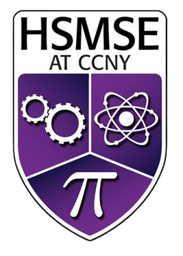
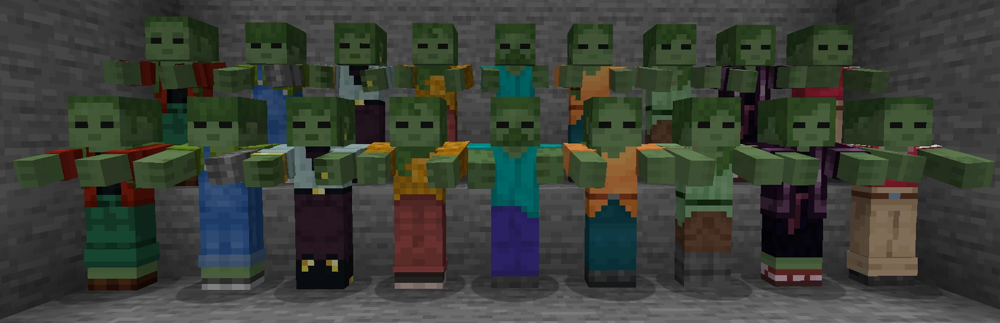

HSMSE @ CCNY
New York, NY
Sept 2017 - June 2021
I am currently a junior at the University of Michigan, where I'm pursuing a Bachelor’s in Computer Science and Engineering. I'm fascinated by computer science theory, hardware, and mathematics and I am specializing in system architecture and high performance computing. By April 2024, I will have completed elective courses covering Operating Systems, GPU Programming, Accessible Software Design, Graduate Computer Architecture, Compiler Design, and more. My skills include proficiency in C/C++, Rust, Python, CUDA, MATLAB, HTML, CSS, and Javascript, as well as a good understanding of computer architecture and its interplay with high performance code. I also possess a strong mathematical background with experience in calculus, linear algebra, and discrete mathematics. Check out my full projects, experiences, and skills below.

Sept 2017 - June 2021
August 2021 - Present
Sept 2021 - March 2022
May 2023 - Aug 2023
¯\_(ツ)_/¯
September 2022
Created a terminal game in which map data is translated into a 3D container and obstacles and enemies are discerned before utilizing graph search and route tracing using either BFS & DFS to find the optimal route to the countess.
Breadth First Search · Depth First Search · File Streams & I/O · Command Line Parsing · Arrays & Containers · Stacks & Queues
C/C++

October 2022
Created a terminal game in which enemy zombies are defined explicitly or randomly via a seed and Mersenne Twister pseudorandom generator. Utilizing priority queues and streaming algorithms, the program found the most optimal way to shoot zombies to maximize time alive.
Priority Queues · Streaming Algorithms · Random Number Generators · File Streams & I/O · Command Line Parsing · Dynamic Memory Management · STL Iterators
C/C++
November 2022
Created a relational database operating on a subset of the SQL language which we dubbed "SillyQL". This database was designed to store tables containing various primitive data related to sales and placed a heavy emphasis on performance and memory overhead which was achieved with several STL data structures and tricks.
Hash Tables · Collision Resolution · Tree ADTs · BSTs & AVL Trees · Standard Template Library · Stacks & Queues
C/C++
December 2022
Created a terminal program which read in an Among Us map and utilized graph algorithms to find the most optimal route through the vents to traverse the entire map. The program featured a fast mode (which used either a farthest insertion or nearest neighbor TSP hueristic) and an optimal mode which used a slower branch and bound algorithm w/ pruning to find the best possible TSP solution.
MST Algorithms · Prim's Algorithm · Kruskal's Algorithm · Branch & Bound Agorithms · TSP Heuristics · Graph Visualization Tools
C/C++